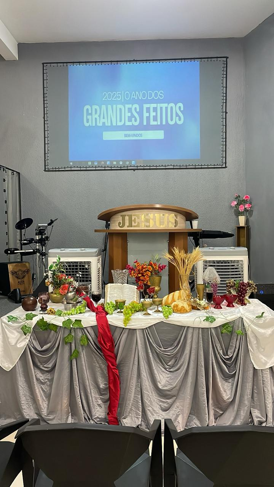
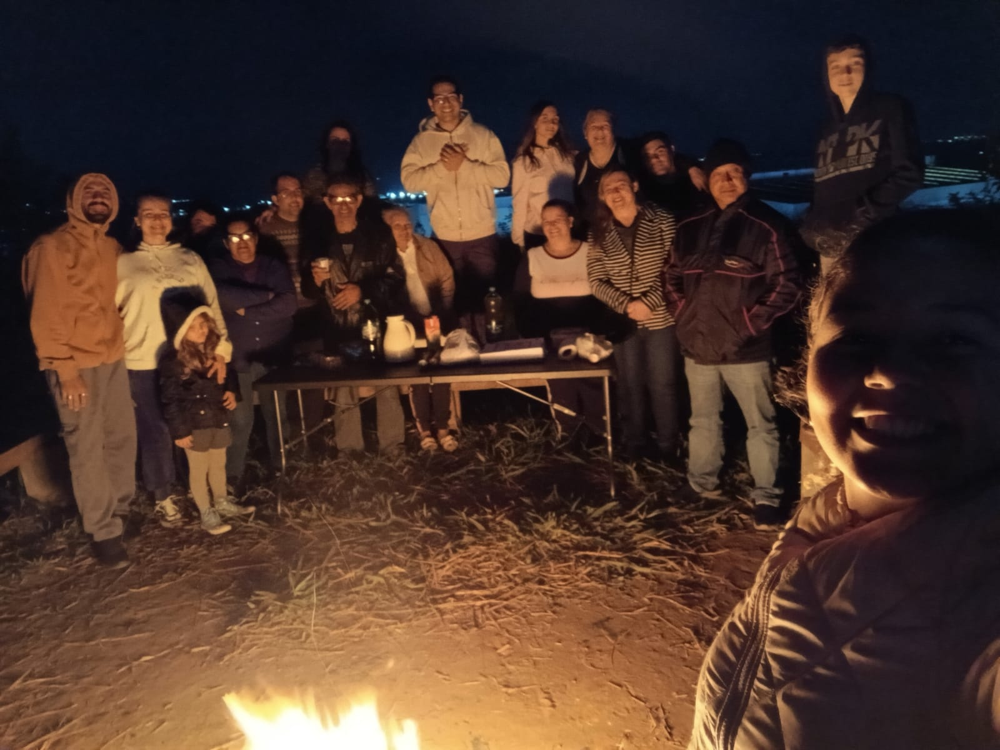
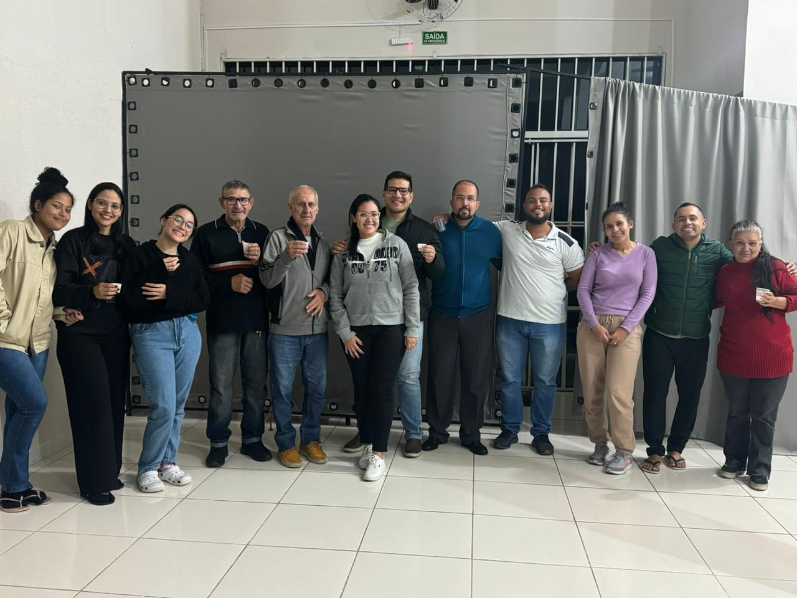

Cultos
Nossos cultos de celebração ao Senhor são realizados semanalmente nas seguintes datas e horários:
Quarta-Feira:às 19h30
Domingo:às 19h30
Nossos cultos de celebração ao Senhor são realizados semanalmente nas seguintes datas e horários:
Quarta-Feira:às 19h30
Domingo:às 19h30
Cremos que a Santa Ceia, juntamente ao Batismo, são ordenanças de Jesus deixadas à igreja. Por isso, entendemos que a Santa Ceia pertence a Deus e não à denominação.
Isso significa que todo aquele que desceu as águas para o Batismo em nome do Pai, do Filho e do Espírito Santo e tendo cumprido o autoexame conforme às Escrituras, mesmo não sendo membro IPFAV, poderá particpar do momento de Santa Ceia.
A Santa Ceia ocorre mensalmente, sempre no primeiro domingo de cada mês, ás 19h durante o culto.

Uma ênfase da Igreja Palavra Fonte de Água Viva está no ministério do ensino.
Sendo assim, há um estudo bíblico, em forma de célula, aberto para todo público, ávido ao aprendizado das Escrituras, sobretudo, para membros da igreja, realizado às sextas-feiras das 19h30 ás 21h, nas instalações do templo.
Vale ressaltar que o estudo não ocorre todas às sextas-feiras, por ser uma atividade alternada com a vigília.
Os estudos bíblicos funcionam do seguinte modo:
- Série de Menssagens
- Roteiro prévio de passagens bíblicas
- Comes e bebes voluntarios
Observação: a quantidade sequencial de sextas-feiras varia de acordo com a extensão do tema abordado. E os participantes são avisados do estudo nos cultos e grupo de Whatsapp.
A vigília ocorre alternadamente com o estudo bíblico. São realizadas ás sextas-feiras, nas dependências do templo ou em local mais retirado da cidade.
O aviso dos dias de vigília e local são feitos nos cultos antecedentes e a atividade é exclusivamente de oração e adoração.
- Sexta-Feira às 20h


O culto em lar é uma atividade da igreja fora das dependências do templo. Ocorre esporadicamente, porém, é um prática contínua do ministério.
O entendimento que temos para avançarmos assim, consiste na parábola do Bom Samaritano. Esse homem levava uma bolsa contendo assistência imediata e, de igual modo, o culto em lar procura levar toda sorte de ajuda espiritual e, logo, encaminhando para a igreja, o grande hospital.
As informações sobre próximas atividades como essa são ditas nos cultos.
- Quarta-feira às 19h30